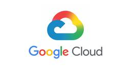

TechHarmony
https://blog.usize-tech.com
エンジニアブログ by SCSK
フィード
受賞者リレーインタビュー！第10弾：岩川 省吾さん
TechHarmony
TechHarmonyエンジニアブログでは、AWS・Oracle Cloud・Azure・Google Cloud 各分野の受賞者にフォーカスし、インタビューを通してこれまでの経歴や他の受賞者に聞いてみたいことをつないで […]
3日前
「ファイルサーバ移行の決定版｜オンプレミス脱却のメリットとDropboxが選ばれる理由」
TechHarmony
5年ごとの「恒例行事」に終止符を 数年ごとにやってくるファイルサーバの保守期限。「次も同じようにハードウェアを買い替えて、データを移行すればいい」と考えていませんか？ しかし、働き方が劇的に変化した今、オンプレミスの運用 […]
5日前

世界が震撼した「Claude Mythos（クロード・ミュトス）」の衝撃！ 激変させるサイバーセキュリティの防衛戦略
TechHarmony
みなさん、こんにちは。 SCSKの石井です。 Claude Mythos（クロード・ミュトス）について、もう皆さんはご存知でしょうか！？ 「Mythos（ミュトス）騒動」の背景にある脅威と、SCSKが今後迎えるべき新たな […]
5日前
【DataKeeper：ミラー同期とデータ保護の核心 #2】スナップショットから戻したのに動かない！？リストア後の「整合性」確保とバックアップ連携の盲点
TechHarmony
LifeKeeperの『困った』を『できた！』に変える！サポート事例から学ぶトラブルシューティング＆再発防止策 こんにちは、SCSKの前田です。 いつも TechHarmony をご覧いただきありがとうございます。 前回 […]
5日前

【Google Cloud】Knowledge Catalogで既存データをAI Readyに変える 1
1
TechHarmony
こんにちは。SCSK山口です。 近年、生成AIやAIエージェントの業務適用が急速に進む中、多くの企業が最初につまずくのが「データ基盤のAI Ready化（AIが理解・活用できる状態への整備）」です。 そこで役立つのが、先 […]
6日前
Single Server Protectionを実際に使ってみた。
TechHarmony
こんにちは、SCSKの伊藤です。 構築の際、「このサーバの可用性は担保できているの？」とお客様に質問されることは少なくないかと思います。 特に困ることが多い『1台のサーバ』で可用性の担保が必要な場合に「Single Se […]
7日前

【ServiceNow】Knowledge26現地参加レポート
TechHarmony
2026年5月5日〜7日、アメリカ・ラスベガスにてServiceNow® Knowledge26が開催されました。 本記事では、現地の様子を写真とともにご紹介いたします！ ServiceNow Knowle […]
10日前
Kong連載第2回 Kong API GatewayのAPIルーティングの基本「Service」と「Route」
TechHarmony
こんにちは。SCSKの石田です。 今回はKongの連載記事第2回です。 前回の記事では、APIトラフィックの急増やAI活用が進む現代において、なぜ「APIマネジメント」が必要なのか、そしてその解決策としての「Kong A […]
10日前
Cato CloudにおけるAI Security全体像とその位置づけ
TechHarmony
SASEプラットフォームであるCato Cloudは、既存のセキュリティ機能に加えてエンドユーザーが利用するAIツールや独自に構築したAIアプリケーションの可視化や制御を行う「Cato AI Securityプラットフォ […]
10日前
Google Cloud で実現する「AI エージェントの統制」― ①Agent Identity 実践ガイド
TechHarmony
こんにちは！SCSKの八巻です。 先日の Google Cloud Next ’26 では、実業務を自律してこなす「自律型AIエージェント」の未来が示されました。しかし、企業導入には「ツール悪用の防止」「デー […]
11日前
受賞者リレーインタビュー！第9弾：木澤 朋隆さん
TechHarmony
TechHarmonyエンジニアブログでは、AWS・Oracle Cloud・Azure・Google Cloud 各分野の受賞者にフォーカスし、インタビューを通してこれまでの経歴や他の受賞者に聞いてみたいことをつないで […]
11日前
Amazon Cognitoの「グループ機能」でAmazon CloudFrontのアクセスを自在に制御する
TechHarmony
こんにちは、ひるたんぬです。 5月も下旬になり、（個人的に）今年の花粉シーズンは無事乗り切ることができました。 ピークのときは寝るときも鼻詰まりで辛かったです。 そんなとき、横向きになって寝ていると、一時的ではありますが […]
12日前
クラウド移行で安心してはいけない — オンプレ以上に考えるべき可用性の真実
TechHarmony
こんにちは。ＳＣＳＫの池田です。 日々お客様と接するなかで、「クラウドに移行したら、可用性は考えなくても良いのでは」と考える経営者や情報システム担当者が少なからずいらっしゃいます。確かに、AWSやAzure、Google […]
12日前
WSFC × DataKeeperについて
TechHarmony
こんにちは SCSK 野口です。 本記事では「WSFC × DataKeeper」についてご紹介いたします。 そもそも、「WSFC × DataKeeper」とは何を指しているのでしょうか。 WSFCは Windows […]
13日前
【DataKeeper：ミラー同期とデータ保護の核心 #1】同期中だから切り替わらない！？フェイルオーバーの「絶対条件」と性能評価の罠
TechHarmony
LifeKeeperの『困った』を『できた！』に変える！サポート事例から学ぶトラブルシューティング＆再発防止策 こんにちは、SCSKの前田です。 いつも TechHarmony をご覧いただきありがとうございます。 これ […]
13日前
AIが攻撃を”予測”して防ぐ。次世代エンドポイントセキュリティ「Deep Instinct」とは？
TechHarmony
高度化するサイバー脅威と、既存対策の限界 ランサムウェアの被害件数は年々増加の一途をたどり、攻撃の手口は日々進化しています。 特に近年問題となっているのが「未知のマルウェア」や「ゼロデイ攻撃」です。これらは既存のシグネチ […]
13日前
AWS FSx for Windowsで重複排除を試してみた！設定から検証まで徹底解説
TechHarmony
こんにちは、SCSK坂木です。 Amazon FSx for Windows File Serverには、ストレージ効率を高めるデータ重複除去機能が搭載されています。 これは、ファイル内の重複セグメントを抽出して効率的に […]
13日前
Dropboxがランサムウェア対策で評価される理由
TechHarmony
ランサムウェアは、ファイルを暗号化して利用不能にし、復旧の見返りに金銭を要求する悪質な攻撃です。近年は個人だけでなく、企業や自治体にも被害が広がり、「感染を防ぐ」だけでなく「感染後に迅速かつ安全に復旧する」体制づくりが重 […]
13日前
さくっと生成！話すアバター動画！Azure AI Speech で Text to Speech Avatar を触ってみた
TechHarmony
こんにちは。SCSK渡辺(大)です。 今回は、AzureAI Speech Studio で Text to speech avatar を触ってみました。 Text to speech avatar over […]
13日前
AIが攻撃し、AIが守る時代へ。 「AI vs AI」最前線とディープラーニングが切り開く新しい防御の形
TechHarmony
サイバーセキュリティの戦場に、かつてないパラダイムシフトが起きています。攻撃者が生成AIや高度な自動化ツールを武器に使い始めたことで、これまでの「検知して、対応する」という後手に回るセキュリティは根底から揺らいでいます。 […]
13日前
【USiZE】日経クロステックNEXT関西2026出展のお知らせ
TechHarmony
こんにちは。SCSKの分目です。 2026年6月11日(木)・12日(金)にグランフロント大阪コングレコンベンションセンターにて開催される 「日経クロステックNEXT関西2026」に、SCSKの国産プライベートクラウド「 […]
14日前
受賞者リレーインタビュー！第8弾：貝塚 広行さん
TechHarmony
TechHarmonyエンジニアブログでは、AWS・Oracle Cloud・Azure・Google Cloud 各分野の受賞者にフォーカスし、インタビューを通してこれまでの経歴や他の受賞者に聞いてみたいことをつないで […]
17日前
Dropboxのお困りごとシリーズ第一弾 ファイルの同期編
TechHarmony
Dropboxはクラウドストレージなのに、ファイルサーバと同じ操作感で利用できることが最大のメリットと言えます。Dropboxデスクトップアプリを PC にインストールしておけば、Dropboxクラウドに保存されているフ […]
18日前
Ansibleを使用してNW機器設定を自動化する（FortiGate-アドレスグループ編①）
TechHarmony
当記事は、日常の運用業務（NW機器設定）の自動化により、運用コストの削減 および 運用品質の向上 を目標に 「Ansible」を使用し、様々なNW機器設定を自動化してみようと 試みた記事です。 Ansibleは、OSS版 […]
18日前
【ServiceNow主催イベント】「ServiceNow AI Summit Tokyo 2026」現地参加レポート！ ～人とAIエージェントが協働しながら業務を遂行する時代へ～
TechHarmony
2026年4月10日（金）、東京都港区のTAKANAWA GATEWAY Convention Centerにて、 「ServiceNow AI Summit Tokyo 2026」が開催されました。 本レ […]
19日前
【Google Cloud】SFTとDPO (直接選好最適化)でGeminiをチューニングする。
TechHarmony
こんにちは。SCSKの島村です。 皆さんはベースモデル（ここで言うベースモデルはハイパースケーラが提供するGeminiなどの基盤モデル）を利用していて、 単に正しい答えを出すだけでなく、「自社のブランドボイスに合わせたト […]
19日前
【緊急】26年5月公開のZabbix の脆弱性情報
TechHarmony
こんにちは、SCSKの後藤です。 Zabbixに関する脆弱性(CVE-2026-23926 ~ CVE-2026-23928)が発表されました。 これらの脆弱性は、6.0.44、7.0.23、7.4.7までのバージョンに […]
19日前
AWS Summit Japan 2026に出展します！
TechHarmony
こんにちは、SCSK株式会社の伊藤です。 今年も、約 30,000 人以上が参加する、日本最大の “AWS を学ぶイベント” AWS Summit Japan 2026 が 6月25日( […]
21日前
【ServiceNow】CSV形式でのエクスポート/インポートによる文字化け解消方法
TechHarmony
こんにちは SCSKの庄司です。 今回は、ServiceNowにおけるCSVファイルのエクスポート/インポートで文字化けする事象と、その解消方法について紹介します。 本記事は執筆時点（2026年5月）の情報になります。最 […]
21日前
Amazon EC2 と WireGuard で軽量 VPN サーバーを構築する -アクセスログ編-
TechHarmony
こんにちは、広野です。 本記事は以下の続編記事です。実装編で紹介した内容のうち、アクセスログの実装にフォーカスして説明します。実装については前回記事を参照ください。 Amazon EC2 と WireGuard で軽量 […]
21日前
Amazon EC2 と WireGuard で軽量 VPN サーバーを構築する -実装編- [AWS CloudFormation 使用]
TechHarmony
こんにちは、広野です。 会社のネットワークから AWS の VPC 環境にリモートアクセスしたいニーズはよくあります。小規模であればクライアント VPC 環境を構築するのが最も容易です。AWS Client VPN とい […]
21日前
【immich】Google Photoを卒業した話
TechHarmony
SCSK永見です。 Google Photo、便利ですよね。Androidユーザとして長年重宝してきました。 しかし、重宝しすぎてストレージが足りなくなりました。ひとつ上のプランにするのもなぁ、、と調べているうちに、Go […]
21日前
【GCN’26 New】Agent Development Kit (ADK) 2.0 を試してみる。
TechHarmony
こんにちは。SCSKの島村です。 Google Cloud Next ’26 in Las Vegas で紹介された「Agent Development Kit 2.0」についてご存じでしょうか？ ADK 2.0では高度 […]
24日前
デジタル基盤停止のリスクを極小化する——SCSKが選ぶ高可用性クラスターの価値
TechHarmony
こんにちは ＳＣＳＫ 池田です。 今回は、経営層のかたや、高可用性クラスター選定に携わる皆様むけに、デジタル化が進む中で企業の基幹系システムを支える高可用性クラスタの重要性を取り上げます。 DX投資が加速する一方で、シス […]
24日前
Cato AIセキュリティプラットフォームでAIセキュリティ設定・検証してみた ～アプリケーション向けAIセキュリティ編～
TechHarmony
以下の記事で、AIセキュリティの概要、およびそれに対するソリューションである 「Cato AIセキュリティプラットフォーム」について簡単に機能紹介させていただきました。 Cato AI セキュリティプラットフォームとは？ […]
1ヶ月前
[注意喚起]最近話題のLinux脆弱性(Copy Fail)について
TechHarmony
今話題のLinux脆弱性について記載します。 Copy Fail脆弱性とは Linuxで一般ユーザーがroot(管理者)に昇格できる脆弱性です。 2017年以降のほぼすべての主要ディストリビューションで発見されています。 […]
1ヶ月前
【v10】LifeKeeper v10のARK変更点まとめ｜Database・SAP・DataKeeper解説
TechHarmony
こんにちは ＳＣＳＫ 池田です。 2025年11月12日にLifeKeeperが10年ぶりのメジャーバージョンアップを果たしました。これまでOS毎に異なっていたライセンス体系やサポート期間の考え方が統一されるなど、「全て […]
1ヶ月前
LifeKeeperの構築時によく使うLKCLIコマンドの紹介
TechHarmony
こんにちは、SCSKの伊藤です。 「LifeKeeper for LinuxをCLIだけで構築してみた。」にて使用した『LKCLI』について、チーム内からも「ある案件でCLI構築が必要」とのことでご質問を受ける機会があり […]
1ヶ月前
AWS × Anthropicの怒涛の4ヶ月（2026年1月〜4月）をKiroにまとめてもらいました
TechHarmony
こんにちは。SCSK渡辺(大)です。 2026年1月〜4月にかけて、AWSとAnthropicの協業が一気に加速しました。 新モデルの連続リリース、開発者ツールの統合深化、サイバーセキュリティの新イニシアチブ、そして史上 […]
1ヶ月前
Cortex CloudのOutpost環境(AWS)を作成してみた
TechHarmony
こんにちは、阿部です。 前回は、Prisma Cloudについての記事を投稿しましたが、今回はPrisma Cloudの後継製品であるCortex Cloudについて書いていきます。 Cortex Cloudには下記表の […]
1ヶ月前
大幅に進化したAWS Security Hub(Advanced)の紹介
TechHarmony
本記事は 春のスキルアップ応援フェア2026 4/30付の記事です。 こんにちは、SCSK木澤です。 AWS のセキュリティ運用の中核を担ってきたAWS Security Hubが2025年にリニューアルされ、機能が強化 […]
1ヶ月前
LambdaのトリガーをAWSコンソールで見たい
TechHarmony
本記事は 春のスキルアップ応援フェア2026 4/29付の記事です。 こんにちは、クラウドサービス関連の業務をしている藪内です。 本記事では、AWSコンソールでAWS LambdaのAmazon SQSをイベントソースと […]
1ヶ月前
受賞者リレーインタビュー！第7弾：広野 祐司さん
TechHarmony
TechHarmonyエンジニアブログでは、AWS・Oracle Cloud・Azure・Google Cloud 各分野の受賞者にフォーカスし、インタビューを通してこれまでの経歴や他の受賞者に聞いてみたいことをつないで […]
1ヶ月前
【Catoクラウド】GCP vSocket構築手順を解説
TechHarmony
本記事は 春のスキルアップ応援フェア2026 4/28付の記事です。 こんにちは！Catoクラウド担当の佐藤です。 これまで、Terraformからのデプロイ方法しかなかったGCP（Google Cloud ）のvSoc […]
1ヶ月前
【Zabbix × ServiceNow検証①】Zabbixの障害通知をServiceNowのインシデントとして自動起票・クローズ連携する方法
TechHarmony
こんにちは！SCSKの新沼です。 今回は、ZabbixとServiceNowの連携の検証として、Zabbixの障害通知をServiceNowのインシデントとして自動起票・クローズ連携する方法をご紹介します。 1. 検証の […]
1ヶ月前
【2026年版】ZabbixでAzure環境を監視！連携手順から取得できる値まで完全解説
TechHarmony
こんにちは、SCSKの坂木です。 統合監視ツールとして広く利用されている Zabbix。近年はクラウド環境の監視にも強力に対応し、マルチクラウド環境の一元管理にも活用されています。 今回は、Zabbix公式テンプレート […]
1ヶ月前
AWS Step Functions Map ステート分散モードで任意の Amazon S3 バケットのフォルダーにあるオブジェクトを並列処理する
TechHarmony
こんにちは、広野です。 Amazon S3 バケットにある大量のオブジェクトのデータ変換を実行するのに、AWS Step Functions でバッチジョブを実行することにしました。その過程で得た Map ステート分散モ […]
1ヶ月前
AWS Step Functionsを使用したAWSリソースのデプロイ
TechHarmony
本記事は 春のスキルアップ応援フェア2026 4/26付の記事です。 こんにちは、SCSKでAWSの内製化支援『テクニカルエスコートサービス』を担当している貝塚です。 以前、以下の記事を書きました。 Network Fi […]
1ヶ月前
Kiroでプレゼンスライドを作成する
TechHarmony
本記事は 春のスキルアップ応援フェア2026 4/25付の記事です。 こんにちは。Masedatiです。 私はLT（ライトニングトーク）が好きですが、スライド作成にもついつい時間をかけてしまいます。 最近登壇や講義活動が […]
1ヶ月前
Amazon Cognito Managed Loginの紹介
TechHarmony
本記事ではCognito Managed Loginについての紹介を行います。 Amazon Cognito Managed Loginとは AWSが提供するAmazon Cognitoの認証画面です。 Cognitoを […]
1ヶ月前